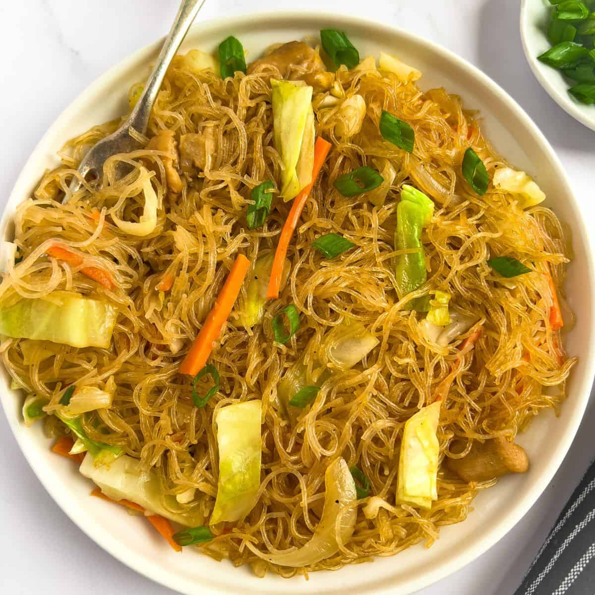
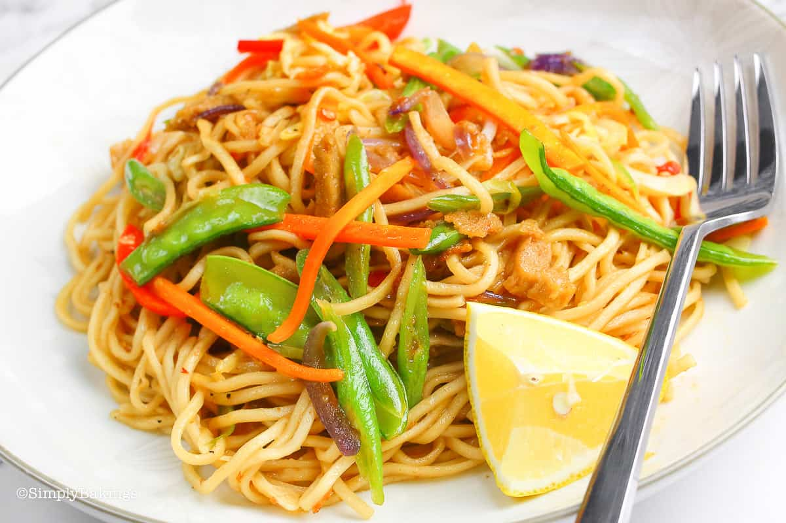

Fried Noodles

₱. 50.00
- Fried Noodles is a type of noodle dish wherein the noodles are fried until crispy with a special sauce.
|
Pancit Bihon

₱. 60.00
- Pancit Bihon is ultra-savory, tasty, and easy to make with rice noodles, vegetables, and some protein. |
Vegan Pancit Canton

₱. 70.00
- Filipino Pancit Canton or stir-fried noodles are flour stick noodles cooked in a broth with lots of veggies, meat, and other ingredients. |
Seafood Pancit Canton

₱. 80.00
- Seafood Pancit Canton is somewhat similar to regular pancit canton and saucy pancit canton, except that it does not contain any meat. |
Pancit Canton w/ Asado Siopao

₱. 90.00
- A classic pancit Canton pairs with Asado Siopao that is made of braised and stewed pork shoulder, hoisin, oyster sauce, and other ingredients. |